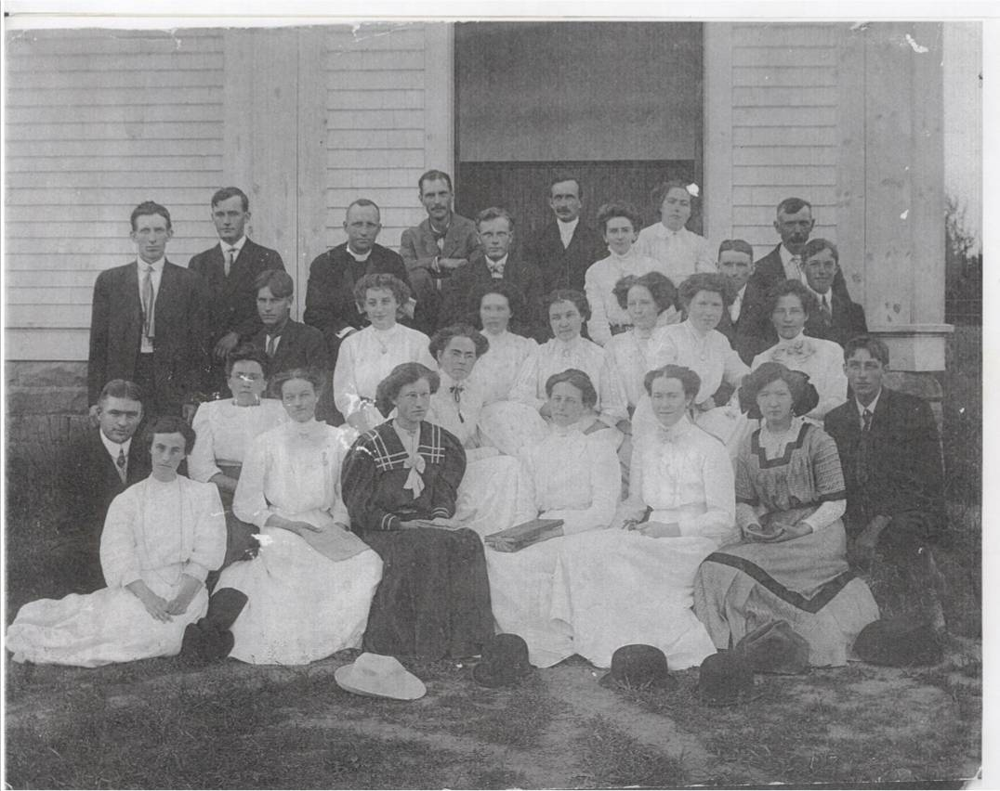

The Family Chronicle
No. 126 December 5, 2006
____________________________________________________________________

St. Stephen’s Presbyterian (Now United) Church Choir Group of 1909
Back Row: John E. MacLean, Will Allen, Rev. Woods from Chatham,
John W. Mick, Ernest Watling,
Rev. G. A. Grant, Mrs. G. A.
Grant, Nellie I. M. MacKay, A. Dick Watling, Donald MacLean and S.
A. Godfrey
Second Row: Robert Godfrey, Emily Watling, Marjorie MacKay, Edith MacDonald, Josie Ullock, Ada MacLean, Ruby MacLean and Janet Watling
Third Row: John MacNaughton, Catherine MacKnight, Bessie Edge, Katie Watling, Jean Cameron, Annie MacKnight, Emma MacKay, Ruth Ullock and James T. D. Watling
Photo courtesy of Ernest MacLean
Recollections of Donald Edge
Donald Edge, grandson of John W and Elspeth (Watling) MacNaughton lived for a number of years in Upper Black River and attended the Upper Black river School. The following paragraphs were excerpted from “Faith of our Fathers”, his memories of religion in Black River.
MacNaughtons were United Churchers, and we were expected to go every Sunday and sit in aisle 14 or nearby. We sang a lot of hymns, and I still like belting out "Onward, Christian Soldiers," "The Old Rugged Cross" and "Come to the Church in the Wildwood." In summers I went to Sunday school where I learned to plait bracelets and memorized Bible verses. Cousin Sidney and I wore white shirts and neckties and stood in front of everyone one Sunday and answered Bible questions and recited verses. We were pretty good at verses, although our behavior was not always good. Especially Sidney.
Going to church in summer meant wearing shoes. This wasn't as simple as it sounds, especially when you have gone barefoot all week, and then wore shoes Saturday night to walk up one side of Main Street in Chatham, in and out of Loggie's and then down the other side of the street to start over again. We were pretty sick of those shoes when we got home late Saturday night, and there we were on the following morning, in shoes once more. Apart from my favorite hymns and the communion grape juice, I wasn't all that keen on church, and while I liked watching whatshisname pump the handle that provided air for the organ, I never really understood what the minister was talking about.
I also liked visiting the graves after church. The St. Stephen's cemetery is on a promontory overlooking Black River as it widens on its path to the Miramichi, and my father is buried close to the overlook, and now my mother is beside him. The cemetery was interesting because so many names were familiar, and because of the variety of gravesites--flat stones, headstones, head-and-foot stones, monuments, tables to shelter those interred, and intricate metal fences. For some time the promontory was threatened by erosion, and there was talk of graves opening and caskets revealed--great stuff for boys.
One of my best friends was Marvin MacLean, and he and lots of otherwise really good people went to the other church, quite close to St. Stephen's. As I understand matters, in the not too distant past there had been some problem with governance, meaning who is in charge, and so the church split in two so that whoever wanted to be in charge got to do so. This seems to be standard Protestant fare and explains the many versions of Protestantism. In any event, I felt comfortable going to what I thought was the real church.
How I came to be in Chatham and Black River, and how I lived there, are woven together in my written memories. The people I remember were human and so less than ideal, and the events were real and so less than perfect. But when I daydream now of my boyhood in the Upper Black River settlement, I see postcard winters and endless golden summers and a world filled with people I loved then as I love them now.
The Family Chronicle (Copyright) is an occasional newsletter published by Don Glendenning and posted on the family website. It is intended to share information about my family, community and the times in which I grew up. While every effort is made to be accurate, errors are likely to occur. Comments, enquiries and information may be sent to 62 Queen Elizabeth Drive, Charlottetown, PEI, C1A 3A9. Tel: 902 892 5859. Email: dglende@auracom.com Web: www.glendenning.net/don